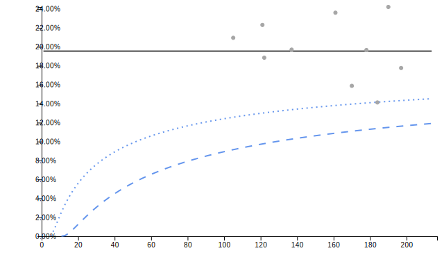

Installation
You can install the development version of controlcharts from GitHub with:
# install.packages("remotes")
remotes::install_github("andrjohns/controlcharts")Or you can install pre-built binaries from R-Universe:
install.packages("controlcharts", repos = c("https://andrjohns.r-universe.dev",
"https://cran.r-project.org"))Getting Started
SPC
# Simulate 2 years of monthly data
dat <- data.frame(
month = seq(as.Date('2024-01-01'), length.out = 24, by = "month"),
y = rnorm(24)
)
spc_chart <- controlcharts::spc(data = dat, numerators = y, keys = month)
spc_chart$static_plot
Funnel Plot
# Simulate proportion data for 10 organisations
denoms <- sample(100:200, 10)
funnel_data <- data.frame(
organisation = letters[1:10],
numerators = rbinom(10, size = denoms, prob = 0.2),
denominators = denoms
)
funnel_chart <- controlcharts::funnel(data = funnel_data,
numerators = numerators,
denominators = denominators,
keys = organisation)
funnel_chart$static_plot